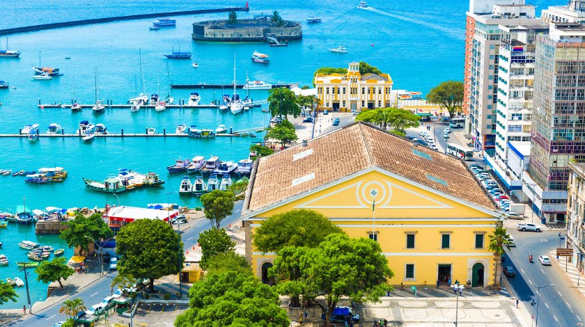
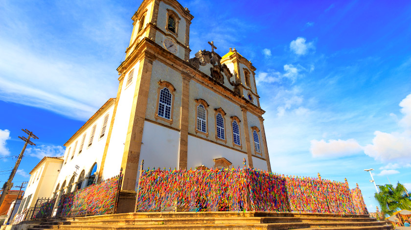
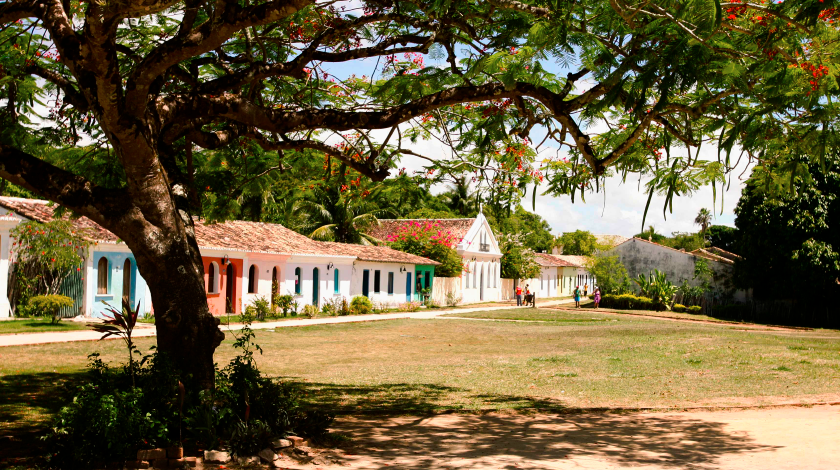
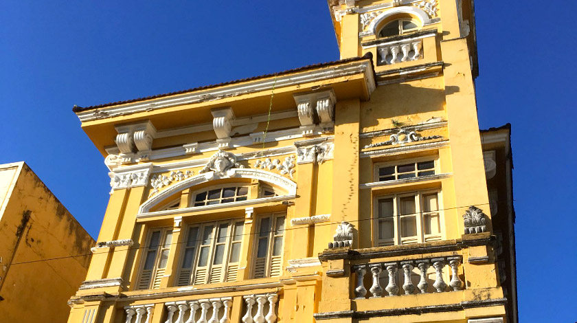

Culinária da Bahia
A Bahia, com certeza, tem uma das cozinhas mais conhecida em todo o Brasil. Seus pratos e receitas têm história e tradição, e sua maior influência cultural veio da África, com os negros que foram trazidos para cá na condição de escravos. A culinária do recôncavo baiano e do litoral é a mais famosa, seu sabor é bem forte e evidenciado, principalmente por conta do azeite de dendê. Outros ingredientes muito usados na gastronomia da Bahia são leite de coco, gengibre e pimenta. Grande parte dos pratos é feita com frutos do mar e peixes, principalmente devido à abundância desses ingredientes na região, mas a cozinha baiana é muito mais do que isso. Veja alguns dos pratos típicos do estado:
- Acarajé
- Abará
- Mugunzá
- Vatapá
O acarajé é um bolinho feito com massa de feijão-fradinho e outros ingredientes fritos no azeite de dendê. A receita marca tanto a culinária baiana que é um Patrimônio Cultural Imaterial da Bahia. É vendido pelas baianas do acarajé (mulheres vestidas com trajes tradicionais que fazem referência ao candomblé) e seu recheio pode levar salada, pimenta, camarão, vatapá e caruru. Visitar a Bahia e não comer acarajé é praticamente um sacrilégio gastronômico.
O abará entra na mesma categoria de importância culinária que o acarajé. Feito com a mesma massa de feijão-fradinho, a diferença entre este e o acarajé é que, em vez de frito, ele é cozido em banho-maria e servido em folha de bananeira. Tanto o abará quanto o acarajé são tidos como comida ritual do candomblé. O abará também pode ser recheado com pasta de pimenta, salada, camarão, vatapá e caruru.
O mugunzá é um prato doce típico da Bahia. Também usada como comida de ritual do candomblé, essa receita tem como ingrediente principal os grãos de milho branco. Esses grãos são levemente triturados e depois cozidos em leite de coco ou de vaca, com açúcar, canela, cravo-da-índia e um leve toque de sal. Na Região Sudeste do Brasil existe uma receita bem parecida, porém é conhecida como canjica. O mugunzá muitas vezes é consumido como café da manhã.
Esse prato cremoso é normalmente feito com pão ou farinha de rosca, fubá, gengibre, pimenta malagueta, amendoim, castanha de caju, leite de coco, azeite de dendê, cebola e tomate. Além de todos esses ingredientes, é possível adicionar também camarão, bacalhau, peixes diversos ou até mesmo carne de frango. Além de ser servido como prato principal ou acompanhamento de outras comidas típicas, é bastante usado no recheio dos acarajés e abarás.
Pontos Turísticos da Bahia
Pelourinho

Pelourinho era o local em que os escravos que fugiam ou cometiam algum tipo de delito eram levados para o castigo. Compostos por uma coluna de pedra com argolas, os pelourinhos ficavam dispostos em áreas públicas,
onde as pessoas eram amarradas e cruelmente torturadas. Salvador, hoje capital da Bahia, já foi capital do Brasil por 214 anos, entre 1549 e 1763. Na época, a mão de obra escrava era usada abundantemente na região e, por esse motivo,
os temidos pelourinhos foram fixados pela cidade como representação de justiça e autoridade dos escravocratas. Alguns dos espaços que receberam os pelourinhos foram: Terreiro de Jesus, Praça Castro Alves e Praça Tomé de Souza.
Local que abrigou uma história tão triste, o Pelourinho de Salvador atualmente é sinônimo de muita música, cultura e arte baiana. Reconhecido como Patrimônio Histórico da Humanidade,
quem visita o espaço pode conferir igrejas com uma arquitetura marcante, como a Catedral Basílica e a Igreja do Rosário dos Homens Pretos, a Fundação Jorge Amado, além de restaurantes,
bares, centros culturais, atrações artísticas, museus e muito mais.
Elevador Lacerda

Para os soteropolitanos (nascidos em Salvador), o Elevador Lacerda é apenas um meio para atravessar a distância entre a cidade baixa e o centro histórico. As obras do Elevador foram iniciadas em 1869 e ele foi inaugurado em 8 de dezembro de 1873,
mesmo dia da comemoração a Nossa Senhora da Conceição da Praia. Inicialmente funcionou com um sistema hidráulico, e fora chamado justamente de Elevador Hidráulico da Conceição, depois de Elevador do Parafuso.
O apelido era referência à peça em espiral que impulsionava as duas cabines do elevador. Quando foi inaugurado, o Elevador Lacerda tinha 63 metros e apenas uma torre com duas cabines.
Só em 21 de julho de 1896 foi rebatizado com o nome do seu criador consagrando-se Elevador Antônio de Lacerda, tipicamente simplificado como Elevador Lacerda até hoje.
O Elevador Lacerda foi idealizado pelo empresário Antônio de Lacerda (1834-1885), o mesmo criador da Companhia de Transportes Urbanos, a primeira operadora de trens de Salvador.
Construído com a ajuda de seu irmão, o engenheiro Augusto Frederico de Lacerda, foi financiado por seu pai, Antônio Francisco de Lacerda.
Os dois irmãos estudaram engenharia no tradicional Rensselaer Polytechnic Institute, em Nova York, mas Antônio retornou ao Brasil antes de completar o curso.
O Elevador Lacerda já passou por uma série de reformas até chegar ao modelo atual.
A primeira delas foi em 1906, quando começou a funcionar movido a eletricidade e teve sua base alargada. Nesse ano precisou parar de funcionar devido às obras de eletrificação, e já no ano seguinte foi reinaugurado.
A maior mudança aconteceu em 1930. Essa reforma foi conduzida e planejada entre 1927 e 1928 pelos arquitetos Fleming Thiesen e Adalberto Szilard, com a parceria da empresa de elevadores Otis.
Nessa nova estrutura foi acrescentada uma nova torre, com mais duas cabinas, além de substituir as duas existentes por modelos mais modernos e eficientes.
Foi construída também uma ponte de aço, que conecta as estruturas. Assim, o Elevador Lacerda atingiu a altura de 72m. Um detalhe interessante dessa reforma são as pilastras e vão finos das torres, que eram uma tendência da época.
Seu interior também passou por uma modernização, recebendo pisos e paredes de granito, em 1932, a empresa estadunidense anunciou seu feito na Fortune Magazine, revelando que no primeiro dia de operação plena foram transportadas 24 mil pessoas.
Em 1955, o Elevador foi estatizado pela Prefeitura. Em 1º de julho 1961, novos elevadores da Otis foram inaugurados, mais rápidos e dobrando a capacidade por cabine de 16 para 32 pessoas.
Restaurado em 2002, ganhou nova iluminação noturna e janelas panorâmicas que mostram o cais e o mercado. O Elevador Lacerda está localizado na região central de Salvador. Mais precisamente na Praça Tomé de Souza.
O elevador Lacerda tem 72 metros de altura, o equivalente a um prédio de 24 andares.
Mercado Modelo

O Mercado Modelo é um mercado de artesanato localizado na cidade de Salvador, estado da Bahia, no Brasil. Foi inaugurado em 2 de fevereiro de 1912, e ocupa, desde 1971, o prédio da antiga Alfândega de Salvador.
Está situado no bairro do Comércio, uma das zonas comerciais mais antigas e tradicionais de Salvador, constituindo-se em importante atração turística, visitado por 80% dos turistas da cidade. Diante da Baía de Todos os Santos, é vizinho do Elevador Lacerda e do Centro Histórico (que inclui o Pelourinho).
Em arquitetura do estilo neoclássico, a edificação é tombada pelo Instituto do Patrimônio Histórico e Artístico Nacional.
Com 8 410 metros quadrados e dois pavimentos, abriga 266 lojas que oferecem a maior variedade de artesanato, presentes e lembranças da Bahia, contando com dois dos mais tradicionais restaurantes de culinária baiana, o Maria de São Pedro, com oitenta anos de existência e o Camafeu de Oxóssi.
A canção "Mercado Modelo", de parceria entre Antônio Carlos, Jocafi e Ildázio Tavares, lamenta na sua letra o incêndio de 1969 que destruiu o prédio original. A música foi gravada em 1973 pela cantora Vanusa e lançada em seu quarto álbum.
O Mercado Modelo surgiu pela necessidade de um centro de abastecimento na Cidade Baixa de Salvador. Entre a Alfândega e o largo da Conceição, constituía-se em um centro comercial onde era possível adquirir itens tão variados como hortifrutigranjeiros, cereais, animais, charutos, cachaças e artigos para o Candomblé.
Assim, o mercado foi inaugurado em 2 de fevereiro de 1912 em uma edificação próxima ao prédio da Alfândega, que havia sido construído em 1860 e inaugurado em 1861.
O abastecimento do mercado era servido pela rampa que leva o seu nome, antigo porto dos saveiros que atravessavam a baía de Todos os Santos.
Logo em 1917, existem poucas informações a respeito de um primeiro incêndio no prédio original do mercado, acreditando-se que não tenha sido de proporções catastróficas. Em 1922, um incêncio iniciou-se na madrugada de 7 de janeiro, tendo reduzido o Mercado às cavernas (áreas subterrâneas), causando mais de mil contos de réis de prejuízos.
À época, registraram-se boatos de que as causas foram propositais. Reformado, tendo a sua pintura original — amarela e vermelha — sido substituída por verde, ganhou o apelido de Tartaruga Verde. E em 1943, registrou-se um terceiro incêndio em 28 de fevereiro (um domingo), com a destruição parcial das suas instalações. Não foram identificadas as causas do incêndio, tendo o edifício sido recuperado.
Basílica do Senhor do Bonfim

A imagem do Nosso Senhor do Bonfim foi trazida em razão de uma promessa feita pelo capitão-de-mar-e-guerra da marinha portuguesa, Theodózio Rodrigues de Faria, que, durante forte tempestade prometeu que se
sobrevivesse traria para o Brasil a imagem de sua devoção. Assim, em 18 de abril de 1745, réplica da representação do santo existente em Setúbal foi trazida daquela vila,
terra natal do capitão, e abrigada na Igreja da Penha até o término da construção da Igreja do Senhor do Bonfim. Em 1754, a parte interna da Igreja do Senhor do Bonfim foi finalizada e
as imagens transferidas para lá em procissão, onde foi celebrada missa solene.
A lavagem da igreja teve início em 1773, quando os integrantes da "irmandade dos devotos leigos" obrigaram os escravos a lavarem a igreja como parte dos preparativos para a festa do Senhor do Bonfim, no segundo domingo de janeiro,
depois do Dia de Reis. Com o tempo, adeptos do candomblé passaram a identificar o Senhor do Bonfim com Oxalá. A Arquidiocese de Salvador, então, proibiu a lavagem na parte interna do templo e transferiu o ritual para as escadarias e o adro.
Durante a tradicional lavagem as portas da igreja permanecem fechadas durante a lavagem — as baianas despejam água nos degraus e no adro, ao som de toques e cânticos africanos. A tradição das fitinhas do Senhor do Bonfim foram idealizadas
por Manoel Antônio da Silva Servo em 1809. À época ele era o tesoureiro e implementou este costume com o objetivo de aumentar a arrecadação de dinheiro para a devoção ao Senhor do Bonfim.
Projeto TAMAR

A ideia do projeto TAMAR surgiu na década de 1970 por meio de um grupo de estudantes de oceanografia que viajavam para praias desertas para realizar pesquisas. Naquela época, no Atol das Rocas, os pesquisadores documentaram
pescadores matando tartarugas-marinhas. Fotos e alguns relatórios foram enviados às autoridades, que estavam querendo iniciar um programa de conservação marinha dando início ao programa que se desdobrou no Projeto Tamar, fundado em 1980.
Segundo levantamentos realizados foram fundamentais as participações do Almirante Ibsen de Gusmão Câmara, fundador da Fundação Brasileira para a Conservação da Natureza (FBCN) como irradiador do projeto, Maria Thereza Jorge Pádua, fundadora da Fundação Pró-Natureza (Funatura), Renato Petry Leal, da Fundação Zoobotânica do Rio Grande do Sul, José Catuetê Albuquerque, fundador do Projeto TAMAR e Guy Marcovaldi, fundador dos projetos TAMAR e Pró-TAMAR.
Guy Marcovaldi, um dos fundadores do projeto, é o atual coordenador nacional do Tamar, que conta com recursos do Instituto Chico Mendes de Conservação da Biodiversidade (ICM-Bio), ligado ao governo federal, Petrobras e dos turistas que visitam suas instalações pagando bilheteria e comprando camisetas do projeto.
O Tamar surgiu com um objetivo de proteger tartarugas-marinhas que estão ameaçadas de extinção no litoral brasileiro. Com o tempo, porém, percebeu-se que os trabalhos não poderiam ficar restritos às tartarugas, pois uma das chaves para o sucesso desta missão seria o apoio ao desenvolvimento das comunidades costeiras,
de forma a oferecer alternativas econômicas que amenizassem a questão social, diminuindo assim a caça das tartarugas-marinhas para a sua sobrevivência. O Tamar também protege tubarões e outras espécies de vida marinha.
Conforme o cronograma do projeto é possível acompanhar visitas orientadas e alimentação dos animais, além do nascimento de bebês tartaruga, a soltura deles no mar e a observação de quatro das cinco espécies de tartarugas marinhas presentes no Brasil.
Para mais informações acesse o site oficial.
Centro Histórico de Porto Seguro

Tombado pelo IPHAN (Instituto do Patrimônio Histórico e Artístico Nacional) desde 1973 como Patrimônio Histórico Nacional, e reconhecido pela UNESCO no ano 2000 como Patrimônio Natural da Humanidade, o Centro Histórico de Porto Seguro, localizado na Cidade Histórica, leva às origens do Brasil, voltando ao período do Descobrimento.
O local tem prédios do século XVI. A geografia quase parece um museu natural – um cenário que já havia cativado os primeiros visitantes em abril de 1500, servindo de inspiração para Pero Vaz de Caminha.
Para quem não lembra, Pero Vaz de Caminha era escrivão da armada de Pedro Álvares Cabral.
O Marco do Descobrimento é um monumento trazido de Portugal junto com as caravelas da frota.
A Igreja Nossa Senhora da Pena , padroeira da cidade, tem uma torre em louça de Macau e possui em seu interior imagens sacras dos séculos XVI e XVII.
O local abriga, por exemplo, a imagem de São Francisco de Assis do século XVI. Tem estilo rococó (manifestação do movimento barroco) em toda a construção, principalmente nos altares.
A Casa da Câmara e Cadeia é referência por abrigar o Museu de Porto Seguro. Sua exposição retrata a vida indígena anterior à chegada dos portugueses ao Brasil, e é possível ver diversos artefatos utilizados por tribos brasileiras. Na parte inferior do está a cadeia, onde ficavam os presos da época.
A Casa da Lenha era uma casa onde os produtos que seriam embarcados ficavam armazenados. A sua localização, próxima ao Rio Buranhém, facilitava muito a operação de embarque. O local abriga, por exemplo, a imagem de São Francisco de Assis do século XVI. Tem estilo rococó (manifestação do movimento barroco)
em toda a construção, principalmente nos altares. A Igreja Nossa Senhora da Misericórdia, de 1526, conserva a imagem rara do Nosso Senhor dos Passos, com olhos de vidro, dentes de marfim e gotas de sangue confeccionadas com rubi.
A Casa da Câmara e Cadeia é referência por abrigar o Museu de Porto Seguro. Sua exposição retrata a vida indígena anterior à chegada dos portugueses ao Brasil, e é possível ver diversos artefatos utilizados por tribos brasileiras. Na parte inferior do está a cadeia, onde ficavam os presos da época.
A Casa da Lenha era uma casa onde os produtos que seriam embarcados ficavam armazenados. A sua localização, próxima ao Rio Buranhém, facilitava muito a operação de embarque.
Já a Igreja de São Benedito, construída pelos jesuítas, guarda as ruínas da primeira escola jesuíta do Brasil. Foi construída a meados do século XVI pelos Jesuítas na atual Rua Dr. Antônio Ricaldi.
Os jesuítas têm grande importância na vida histórica brasileira. Houve vários conflitos, principalmente entre colonos e índios e entre colonos e jesuítas.
Casa de Cultura Jorge Amado

Ilhéus é musa do escritor baiano Jorge Amado, e por isso é comum passear pela cidade e ver diversos lugares que fizeram parte das obras ou vida do autor. A Casa de Cultura Jorge Amado fica localizada na Rua Jorge Amado, no centro da cidade. Fundada em 27 de Junho de 1997, durante a segunda gestão do prefeito Jabes Ribeiro, o palacete foi restaurado e hoje mantêm em exposição roupas, fotos, histórico dos pais e da infância, além de vídeos sobre o escritor.
Para incrementar o passeio, dê uma passada no Bar Vesúvio, a menos de 100 m da Casa de Cultura. Ele foi cenário para o romance de Gabriela e Nacib, da obra “Gabriela, Cravo e Canela”, de Jorge Amado. Visite também o cabaré Bataclan, comandado por Maria Machadão na obra de Amado, e onde hoje funciona restaurante e acontecem eventos e apresentações teatrais.
a Casa de Cultura Jorge Amado oferece aos visitantes a possibilidade de conhecer as experiências vivenciadas pelo escritor desde a sua infância até a vida adulta. Ele explica que “a Casa foi onde teve início a vida literária de Jorge Amado”, logo considera de extrema importância preservá-la como patrimônio histórico da cidade.
Praias da Bahia
Praia do Farol da Barra – Salvador


A Praia do Farol da Barra é uma das melhores e mais populares em Salvador, um destino repleto de praias lindíssimas. O local abriga um dos maiores cartões-postais da Bahia,
o Farol da Barra, e recebe vários eventos. A sua estreita faixa de areia branca e fofa, que tem várias pedras nos extremos, fica lotada durante a alta temporada, então, prepare-se para dividir o espaço com muitos outros turistas,
inclusive famílias com crianças. O mar não é totalmente sereno, mas as ondas são baixas e oferecem uma experiência segura, desde que as formações rochosas sejam observadas.
Na maré baixa, até são formadas algumas piscinas naturais que são a alegria da criançada.
Praia do Forte – Mata de São João
Em Mata de São João fica a Praia do Forte, uma das mais famosas e bonitas do litoral baiano.
Com isso, ela tende a ficar bem movimentada durante o verão, sendo perfeita para quem curte agito. Um dos seus maiores destaques é o mar de tonalidade turquesa e águas cristalinas,
proporcionando um verdadeiro paraíso tropical. Em alguns pontos, há formações de corais, que criam pequenas piscinas ideais para o mergulho livre.
A faixa de areia não é muito larga, mas é extensa o suficiente para dar conta das centenas de pessoas que a visitam. De areia branca e fofa,
a praia oferece muita estrutura, com barracas para todos os gostos.
Taipu de Fora – Península de Maraú
No auge da maré baixa, especialmente nas luas nova e cheia, Taipu de Fora vira um paraíso repleto de piscinas naturais. O cenário dessa linda praia da Bahia, na região da Península de Maraú, atrai turistas em busca de uma deliciosa experiência à beira-mar. Para chegar às piscinas naturais de Taipu de Fora não será necessário fazer passeios de barco ou jangada. As piscinas naturais que se formam entre os corais estão localizadas logo ali, a poucos passos da areia. Exatamente por isso Taipu de Fora é tão especial e está entre as melhores praias da Bahia.
Ponta do Mutá – Barra Grande – Península de Maraú
Se há um espetáculo verdadeiramente apaixonante entre as praias da Bahia que visitamos, certamente é o pôr do sol na Ponta do Mutá. Se você estiver com viagem marcada para a região da Península de Maraú, no sul da Bahia, e pedir dicas aos amigos, é seguro que ouvirá muitas recomendações para ver o entardecer na areia dessa praia. E não importa o quanto te digam que é bonito e imperdível, só mesmo assistindo pessoalmente para entender que esse pôr do sol é mesmo especial. A Praia da Ponta do Mutá é linda também durante o dia, porém no final da tarde é que ela atrai grande parte dos turistas que buscam um cenário mágico. Escolha o seu pedacinho de areia e curta, sem pressa, a mudança das cores no céu.
Ponta dos Castelhanos – Ilha de Boipeba
A Ilha de Boipeba, vizinha a Morro de São Paulo e uma dos melhores destinos entre as praias da Bahia, é repleta de paisagens sublimes. Uma praia, entretanto, se destaca em meio à beleza da região: a Ponta dos Castelhanos. Distante dos pequenos povoados que ocupam a ilha, a Ponta dos Castelhanos tem acesso mais difícil e isso já é suficiente para ajudar a manter a preservação da área e a sensação de estar em um lugar praticamente intocado em meio ao litoral baiano.
Prainha e Praia de São José – Itacaré
A Prainha é quase um mito entre os turistas que chegam a Itacaré, no sul da Bahia. É fácil ouvir na cidade que a Prainha é a faixa de areia mais bonita da região. Podemos garantir que há várias belas praias em Itacaré, mas a Prainha é mesmo especial! A faixa de areia da Prainha não é longa, mas o lugar é muito bem preservado, cercado por coqueiros e marcado nas pontas por belas formações rochosas. O mar é límpido e de tons esverdeados, a areia clara e até as ondas ajudam a completar esse belo cenário.
Praia de Itacarezinho – Itacaré
O visual do alto da pista de acesso à Praia de Itacarezinho, em Itacaré, já é capaz de causar comoção entre os amantes do mar. A água em tons de azul e cercada por intensa faixa de coqueiros parece o desenho da praia perfeita. Impossível não parar o carro no alto do mirante para apreciar a vista por alguns minutos. À beira-mar o visual é ainda mais esplêndido. A longa faixa de areia clara, com 3,5 km de extensão, parece não ter fim e a Praia de Itacarezinho é um convite a longas caminhadas.
Praia dos Coqueiros – Trancoso
A Praia dos Coqueiros é a mais procurada entre os turistas que estão em Trancoso. Alguns leitores podem achar estranho ela estar nessa lista, mas a verdade é que a Praia dos Coqueiros reúne várias qualidades, por isso, ela está na nossa lista! O grande charme dessa faixa de areia é oferecer, na mesma praia, vários quiosques deliciosos e também cantinhos sossegados para quem deseja uma praia sem ninguém. Sendo assim, a Praia dos Coqueiros é pra todo mundo!
Praia do Espelho e Praia dos Amores – Trancoso
A Praia do Espelho (Curuípe) é o desejo de muitos turistas que visitam o Litoral Sul da Bahia. A praia é famosa pela formação de piscina naturais à beira-mar e também pelo maravilhoso visual das falésias e coqueiros que cercam a faixa de areia. A Praia do Espelho e a Praia dos Amores são vizinhas e têm característica bem semelhantes. Na maré baixa, as duas se unem e muitas vezes são tratadas como a mesma praia, porém na maré alta o mar fecha a passagem entre as duas e a Praia dos Amores fica isolada, tento acesso apenas pela trilha no alto da falésia (de onde se tem linda vista para o mar).
Praia do Encanto – Morro de São Paulo
A Praia do Encanto também é conhecida como a Quinta Praia e fica em Morro de São Paulo, na Ilha de Tinharé. Por si só, o distrito já é afastado, mas esta praia é ainda mais. Distante do centro, ela é uma escolha perfeita para quem busca uma opção tranquila e longe das badalações. Cruzar toda a distância vale a pena, pois o mar tem ondas menores e quase serenas, além de ela ser muito deserta. A vegetação ao redor deixa tudo mais interessante e, na maré baixa, formam-se piscinas. Não estranhe se, por acaso, você avistar cavalos cruzando essas pequenas formações naturais.
Praia do Sul – Ilhéus
Em Ilhéus, a Praia do Sul é uma opção urbana e ideal para quem deseja ter facilidade de acesso e busca um local agitado e com bastante estrutura.
A praia faz parte das mais frequentadas no destino, então se prepare para dividir o espaço durante a alta estação. A areia é clara e fina, ajudando a criar um visual bem confortável.
Também não faltam barraquinhas, mesas e cadeiras, com boas refeições sendo servidas. O mar é calmo na maioria dos pontos, sendo ideal para famílias com crianças.
Entretanto, há áreas ao sul em que o mar é violento e agitado, além de ter muitas rochas. Vale prestar atenção nisso para evitar acidentes e garantir a diversão.
Praia do Satu – Caraíva
Pequena, quase desconhecida e, por isso, sensacional: essa é a Praia do Satu, em Caraíva.
Trata-se de uma opção perfeita para quem deseja conhecer áreas pouco exploradas da Bahia e ter como recompensa um visual inigualável. A areia é clara e muito compacta, o que a deixa bem fresca em vários momentos do dia. Em alguns pontos, há pequenas pedras no local que, na maré baixa e tranquila,
formam uma espécie de piscina natural. O mar é cristalino e com ondas bem baixas. Com temperatura agradável, é uma opção perfeita o ano inteiro e que também é ideal para as famílias.
Um dos maiores destaques do ponto é que há uma lagoa de água doce bem perto do mar.
Geografia da Bahia
A Bahia está localizada na Região Nordeste Brasil, sendo banhada na sua porção leste pelo Oceano Atlântico. O território baiano é o maior em área dentre os demais estados nordestinos e faz divisa com Sergipe, Alagoas, Pernambuco, Piauí, Tocantins, Goiás, Minas Gerais e Espírito Santo. O relevo baiano é formado por áreas de planície, próximas ao litoral, assim como formações de planaltos e depressões no interior, sendo muito comum a presença de chapadas e chapadões. A formação de relevo mais conhecida do estado é a Chapada Diamantina. O ponto mais elevado da Bahia é o Pico do Barbado, que tem aproximadamente 2.000 metros de altitude. O principal rio do estado é o São Francisco, que, apesar de nascer em Minas Gerais, corta todo o território baiano, influenciando o clima, a vegetação e as atividades humanas da região. Os rios Paraguaçu e Contas são outros rios baianos de destaque. Na Bahia, predomina-se o clima tropical. Nesse clima, há duas estações bem definidas, com um verão mais quente e um inverno mais ameno. Porém, formações de relevo locais contribuem para que nos pontos mais altos do estado haja a preponderância do subtipo climático tropical de altitude, que apresenta temperaturas mais amenas. Já no sertão baiano, ocorre o subtipo tropical semiárido, influenciado pelas zonas de alta pressão da região. As áreas semiáridas são caracterizadas por temperaturas muito elevadas e pela irregularidade dos regimes de chuva. A partir da influência dos tipos climáticos, a Bahia possui três grandes formações vegetais. As florestas tropicais estão presentes nas áreas mais úmidas, em especial no sul baiano, próximas ao litoral. A presença de formações de Mata Atlântica é muito comum nessa região.
Divisão Geográfica da Bahia
A Bahia é um dos estados com maior área territorial do Brasil e é dividida politicamente em 417 municípios. Os municípios baianos, conforme critérios definidos pelo Instituto Brasileiro de Geografia e Estatística (IBGE), estão agrupados em regiões intermediárias e imediatas. No total, a Bahia possui 10 regiões intermediárias e 33 regiões imediatas, conforme a divisão explicitada na tabela a seguir.
| REGIÕES GEOGRÁFICAS INTERMEDIÁRIAS | Salvador | Santo Antônio de Jesus | Ilhéus/Itabuna | Vitória da Conquista | Guanambi | Barreiras | Irecê | Juazeiro | Paulo Afonso | Feira de Santana |
|---|---|---|---|---|---|---|---|---|---|---|
| REGIÕES GEOGRÁFICAS IMEDIATAS | Salvador, Alagoinhas | Santo Antônio de Jesus, Cruz das Almas, Valença, Nazaré — Maragogipe | Ilhéus/Itabuna, Teixeira de Freitas, Eunápolis/Porto Seguro, Camacan | Vitória da Conquista, Jequié, Brumado, Ipiaú, Itapetinga | Guanambi, Bom Jesus da Lapa, | Barreiras, Santa Maria da Vitória | Irecê, Xique-Xique/Barra | Juazeiro, Senhor do Bonfim | Paulo Afonso, Ribeira do Pombal, Euclides da Cunha, Cícero Dantas, Jeremoabo | Feira de Santana, Jacobina, Itaberaba, Conceição do Coité, Serrinha, Seabra |